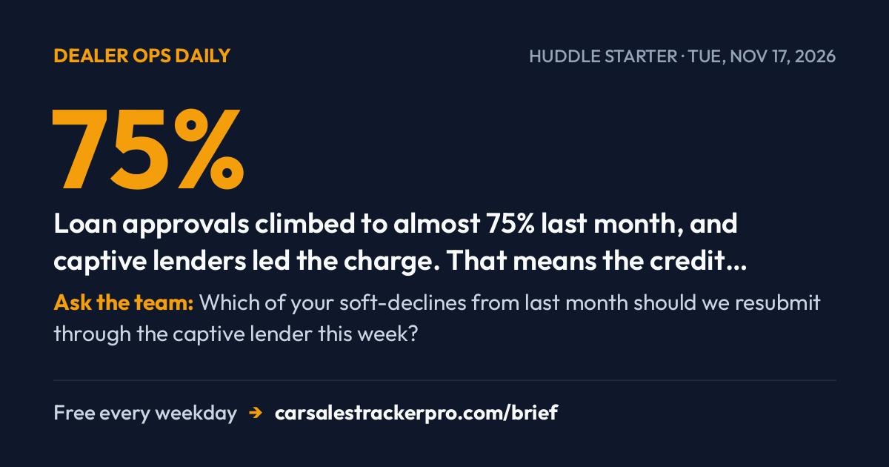

Profits, Blue Sky Both Slide As Loans Ease


Public dealer groups reported their worst profit quarter in years yesterday, even as lenders approved loans at the fastest clip since spring - a split that shows up in today's desk log before lunch.
☕ HUDDLE STARTER · read it aloud in 60 seconds
75% — Loan approvals climbed to almost 75% last month, and captive lenders led the charge. That means the credit conversation got easier for a lot of the buyers walking in today.
Ask the team: Which of your soft-declines from last month should we resubmit through the captive lender this week?
⚖️ Protect the deal
NHTSA Opens Probe Into GM V-8 Engine Failures Before New Launch
NHTSA has opened a formal investigation into engine failures in GM's current-generation V-8 pickups, according to agency filings cited by Automotive News (Nov. 16). No fix timeline or recall scope has been announced yet, and this lands right as the next-gen engine starts rolling out.
Use it today: If a customer asks about the probe on a used Silverado or Sierra, pull the VIN and check NHTSA's site with them - it beats a guess and shows you're not hiding anything.
Sources: Automotive News
Alleged Parts-Theft Ring Tied To Ford Rouge Employee
A theft ring allegedly sourced parts through an employee at Ford's Rouge Complex, according to Automotive News (Nov. 16); the case hasn't been adjudicated. No dealership victims are named yet, but stolen OEM parts tend to surface in independent repair and parts channels.
Use it today: Run your parts-counter intake like a trade appraisal - check part and serial numbers against your DMS before restocking anything that arrived outside your normal vendor channel.
Sources: Automotive News
💰 The desk & the box
Auto Loan Approvals Near 75% In October
Approval rates climbed toward 75% in October as captive lenders loosened terms and took on a bigger share of riskier paper, according to F&I and Showroom (Nov. 16).
Use it today: Push the apps you'd normally soft-decline back through the captive lender first this week - they're the ones stretching right now, not the banks.
Sources: F&I and Showroom (FI Magazine)
🚗 Market numbers
Used Inventory And Prices Both Eased In October
Used-vehicle inventory fell to 2.19 million units in October, down 0.9% from September but still up 0.1% year over year, according to CBT News (Nov. 16). Separately, F&I and Showroom's October data showed new- and used-inventory trends diverging even as prices kept rising on both sides of the lot (Nov. 16).
Use it today: If your used lot is tighter than last month, say so with today's shoppers - a clean unit doesn't need a discount just because October felt slow.
Sources: CBT News · F&I and Showroom (FI Magazine)
🏬 The floor
Blue Sky Values Drop 10.4% As Dealer Profits Slide
Average blue sky value for publicly owned dealerships fell 10.4% to $17 million in the third quarter, according to Haig Partners' Q3 2026 Haig Report, cited by Digital Dealer (Nov. 16). Store profits dropped 14.9% year over year as new, used, and F&I margins all tightened, even as Haig raised valuation multiples for Lexus, Mercedes-Benz, BMW and Toyota.
Use it today: Know your four-square cold before you sit down today - margin compression up top means the desk has less room to move than it did a year ago.
Sources: Digital Dealer / Dealer Magazine
🛠️ Tool of the day (Sponsored)
CarSales Tracker Pro: The iOS app for tracking every deal, commission, and spiff — know your real number before payroll does. Built by the team behind this newsletter.
If this one was useful before your meeting, send it to someone else on your floor who could use it too.
Commission calculator
Estimate this month's check from units, gross, pack and minis.
ComparisonPay plan comparison
Put two plans side by side under the same month.
Free trackerTrack every deal
Log each car and watch your month-to-date pay climb.